サバイバールール
サバイバー制限
- 同一試合のサバイバー4名間でキャラクターの重複禁止。レジェンダリーはゲーム上の別キャラクターとして扱うが、同一レジェンダリー同士は重複不可。
- 同一試合のサバイバー4名間でパーク重複禁止。
禁止パーク
恵みパークはすべて禁止。
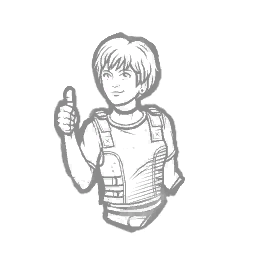
安心感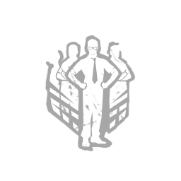
有能の証明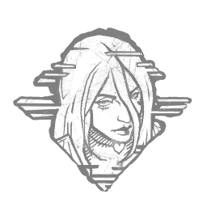
邪気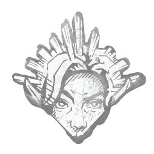
不動の視力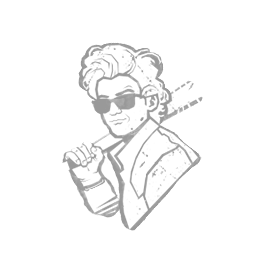
ベビーシッター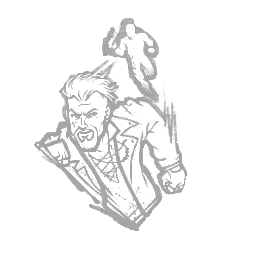
加速の策略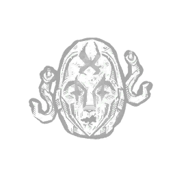
重責の引き受け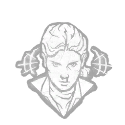
ESP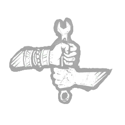
切磋琢磨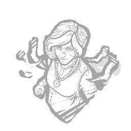
過剰な熱意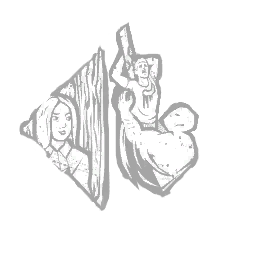
自己防衛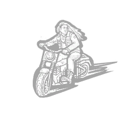
アクセル全開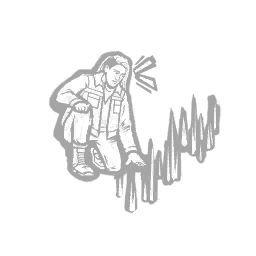
反対尋問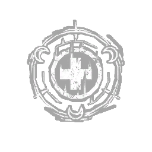
恵み：癒しの輪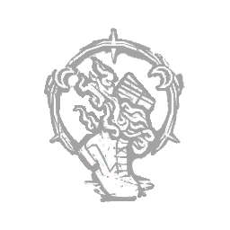
恵み：シャドウステップ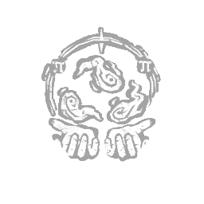
恵み：指数関数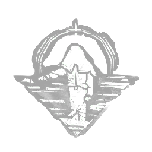
恵み：霊界理論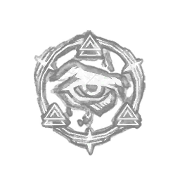
恵み：イルミネーション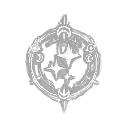
恵み：着実アイテム
- アイテムの持ち込みは禁止。持ち込みアイテムのアドオンも使用禁止。
- 試合中に入手・生成したアイテムは使用可能。ただし鍵は使用禁止。拾うこと自体は可。
- 鍵を使用した場合、鍵によって得た結果は原則無効。試合結果・進行への影響が大きい場合は運営が再試合・追加処置等を判断する。
トーテム
- 呪いのトーテムは、発電機1台目が修理完了するまで破壊完了してはいけない。
- 1台目の修理完了に合わせて破壊できるよう、事前に触る・浄化を開始することは可。
- 無力なトーテムは開幕から破壊可能。
- 発電機1台目の修理完了前に呪いのトーテムを破壊した場合は運営を呼び、キラー側の確認も踏まえて再試合・ペナルティ等を判断する。
セノバイトの箱＋予想外の展開
- セノバイトの箱を所持した状態で「予想外の展開」を使用することは禁止。
- 違反時はキラー側の意向を確認したうえで、再試合・続行等を運営が判断する。
AFC
- AFCによる自力脱出は原則禁止。AFCゲージが溜まること自体は違反としない。
- 正規の自力脱出パークを使用する場面で、ゲーム仕様上AFCの自力脱出が優先された場合は使用可能。
- 未通電ハッチ閉鎖後の地下室での試合終了処理では、AFCによる自力脱出を行わない。
煽り・エモート等
- 攻撃・当たり判定回避を目的としたしゃがみは使用可能。挑発目的の屈伸は禁止。
- ライトカチカチ、挑発目的のエモート、その他意図的な煽り行為は禁止。
- 板前・ゲート内でのエモートテックは原則使用禁止。ただし、その行為単体では大会上のペナルティを科さない。キラー側から申告があった場合、運営から注意することがある。